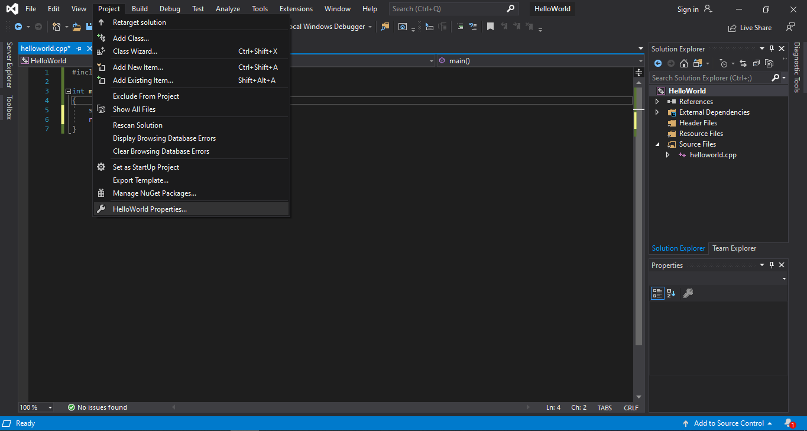
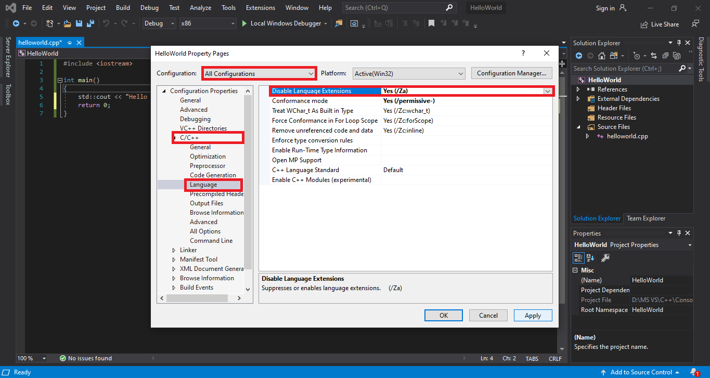

C++ tiêu chuẩn xác định các quy tắc về cách các chương trình nên hoạt động trong những trường hợp cụ thể. Và trong hầu hết các trường hợp, compiler sẽ tuân theo quy tắc đó. Tuy nhiên, cũng có nhiều compiler có vài sự thay đổi riêng (không nằm trong C++ tiêu chuẩn) nhằm tăng khả năng tương thích với các phiên bản khác nhau của ngôn ngữ. Các hành vi dành riêng cho compiler như thế này được gọi là compiler extension.
Viết một chương trình có sử dụng compiler extension sẽ khiến chương trình của bạn không tương thích với C++ tiêu chuẩn. Điều này dẫn đến chương trình của bạn có thể không chạy được trên compiler khác, hoặc nếu chạy được thì cũng sẽ hoạt động sai mong muốn.
Không may là compiler extension sẽ được bật mặc định. Điều này sẽ rất có hại cho người mới học lập trình vì compiler extension vi phạm quy tắc của C++ tiêu chuẩn và họ sẽ nghĩ sai rằng vài hành vi thuộc về C++ tiêu chuẩn nhưng thực chất không phải. Chính vì điều này, mình khuyến khích các bạn tắt nó trước khi viết chương trình.
Cách tắt compiler extension
Đối với Visual Studio, bạn click mục Project trên thanh công cụ phía trên, chọn phần Properties ở phía dưới cùng (trước Properties có tên project hiện tại của bạn)
Nó sẽ xuất hiện một cái bảng. Các bạn chỉnh lại phần Configuration sang All Configurations (tức là bạn muốn áp dụng điều này cho tất cả configuration). Rồi sau đó click vào C/C++ (lưu ý project của bạn phải có file .cpp thì nó mới hiện option này); chọn mục Language; ở phần đầu tiên Disable Language Extensions, các bạn click vào cái mũi tên bên phải và chọn Yes (/Za).
Cuối cùng, các bạn nhấn Apply rồi OK là xong.
Lưu ý: Setting trên không có tác dụng đối với toàn bộ project; do đó, mỗi khi bạn tạo project mới, bạn phải setting lại như trên.